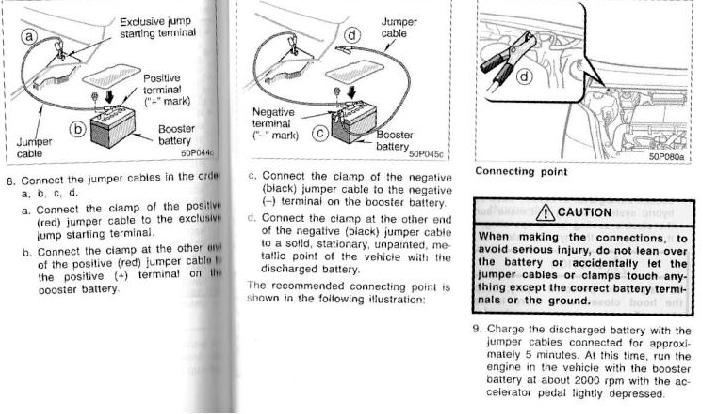

Toyota pioneered mass use of hybrid vehicles. One of us owns a hybrid car and drives it to his own and his family satisfaction. A recreational-educational family activity is checking the consumption monitor and enjoy the energy recuperation provided by the sheer inertia of the vehicle during decelerations and braking, knowing that not only the vehicles is not burning fuel but it is actually “generating” it.
A hybrid vehicle relies on batteries. It does happen that those go flat. The owner naturally takes a look at the operating manual.the 2007 edition, Publication OM47556U
Here something interesting takes place. The manual appears to be designed for purposes other than the solution of problems. It is full of warnings (in powerful attention-attracting bright yellow boxes), that are actually legal disclaimers and appear to be dictated not by the engineering, but by the legal department of Toyota. When it comes to jump starting the battery, an operation that may have to be performed in strenuous climate conditions that are often-time accompanied by psychological strain, it is quite hard to figure out from the illustrations where one should connect the cable for recharging. Where should one attach the clamp of the jumper cables? The distracting warnings add to the difficulty of the task, inducing further stress.
Given this, you may think that it is wise to check the battery status from time to time, when things are calm. The journey through the manual is interesting.
Go to p. 414,“Checking 12 volt battery condition.”
The back door may not open.
“If the back door does not open, see “if you cannot operate back door
opener on page 376”.
On page 376, the first step is Opening the luggage storage box.
For this, “See ‘Luggage storage box’ on page 314”.
A paper manual is not a hypertext and ought not to be written like a
hypertext. It must be used efficiently precisely when power is out and
paper is the last resource.